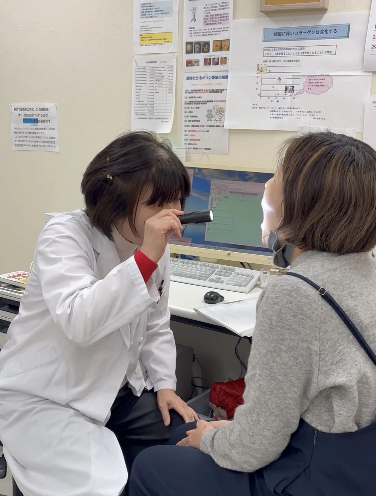

地域に寄り添うクリニック
おからだのことを、
いつでも。
患者さまお一人おひとりに丁寧に向き合い、
安心して通えるクリニックを目指しています。
📞 088-856-7511
診療内容を見る
‹
›
News
お知らせ
お知らせ一覧を見る →
Doctor
院長ごあいさつ
👩⚕️
院長
吉村 尚子
地域の皆さまが「ちょっと気になること」を気軽に相談できるクリニックでありたいと思っています。体のことだけでなく、こころのこと、生活のことも含めて、一緒に考えていきましょう。
院長のプロフィール・メッセージを読む →
Departments
診療科目
内科・こころ・漢方まで、幅広い症状に対応しています
🌿
漢方内科
体質・体の根本から整える漢方薬を処方します。
更年期
冷え・むくみ
胃腸不調
体質改善
🧠
心療内科
ストレス・こころの不調に、ゆっくり向き合います。
不眠
うつ・不安
自律神経
パニック
🩺
内科
生活習慣病まで、日常の体の不調を診察します。
高血圧
糖尿病
健診後相談
詳しい診療内容を見る →
Self-pay Treatment
自費診療メニュー
保険診療に加え、さまざまな自費診療も行っています
🌸
プラセンタ注射
更年期・疲労回復・肌荒れ改善
🌀
オゾン点滴
免疫力向上・抗酸化・慢性疲労
✨
白玉・ビタミンC点滴
美白・シミ・くすみ改善
🌿
漢方・鍼
体質改善・冷え・自律神経
料金・詳細を見る →
First Visit
初めての方へ
初診もお気軽にどうぞ。受付からお会計まで丁寧にご案内します。
1
📞
お電話・来院
予約なしでも受付します。お電話いただけるとスムーズです。
2
📋
問診票記入
受付で問診票をお渡しします。症状・お薬を記入してください。
3
🩺
診察
医師が丁寧に問診・診察を行います。気になることはなんでも。
4
💊
お会計・処方
院外処方です。近隣の調剤薬局でお薬を受け取ってください。
🎒
初診の際は
マイナンバーカードもしくは資格確認書
・各種医療証・
お薬手帳
をお持ちください。現在飲んでいるお薬の情報があると診察がスムーズです。
Hours
診療時間
月
火
水
木
金
土
日・祝
午前
9:00〜12:00
◯
◯
◯
休
◯
◯
休
午後
14:00〜18:00
◯
◯
◯
休
14:00〜
19:00
休
休
🌿 木曜・土曜午後・日曜・祝日は休診です。土曜は午前のみの診療となります。
Access
アクセス
📍
住所
高知県高知市
北金田11-22
ソフィアビル5F
📞
電話番号
088-856-7511
受付時間
診療時間と同じ